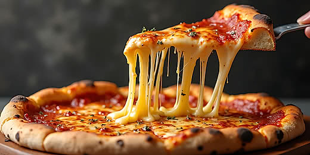
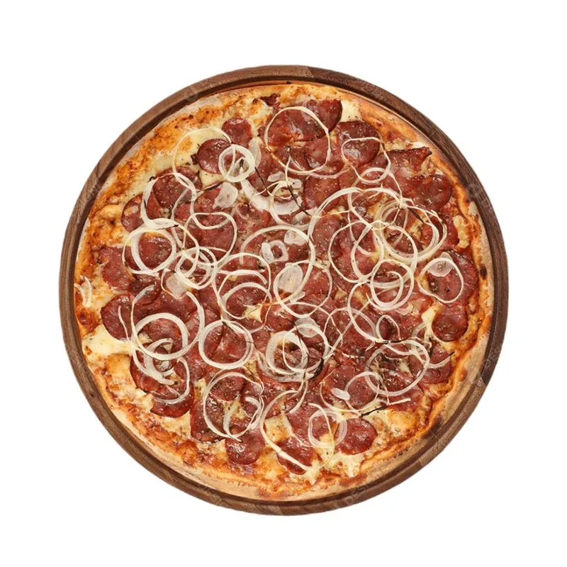

Pizzas artesanais preparadas com ingredientes selecionados pelo próprio Ratatouille e muito sabor.


Molho de tomate, mussarela, calabresa, cebola e orégano.
R$45,00
Molho de tomate, mussarela, manjericão e azeite de oliva.
R$50,00
Molho de tomate, mussarela, provolone, parmesão e gorgonzola.
R$55,00
Há mais de 10 anos preparando com ingredientes selecionados e levando sabor para toda a família.